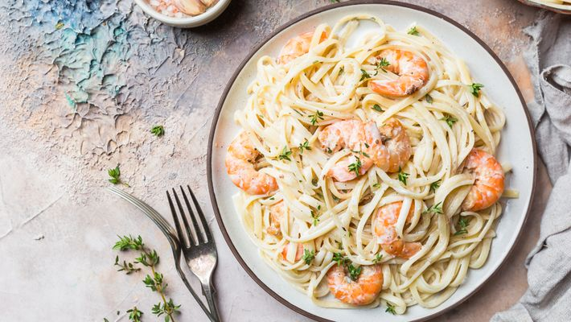

Macarrão ao molho branco com camarão

Macarrão de fácil preparo para ocasiões especiais.
Ingredientes
- 1 pacote de macarrão
- Água, sal e um fio de óleo para cozinhar o macarrão
- 500g de camarão
- 1 cubo de caldo de camarão
- 5 colheres de azeite
- 1 cebola grande cortada em rodelas
- 2 dentes de alho
- 1 copo americano de leite
- 1 pouco de cheiro verde
- 1 creme de leite
- 4 fatias de queijo provolone
- 1 pouco de salsa
- sal a gosto
Preparo
- Prepare o macarrão e reserve
- Coloque o azeite, cebola e o alho numa panela e leve ao fogo
- Deixe por 5 minutos e ferva junto com o leite, cubo de caldo de camarão e o cheiro verde
- Salgue a gosto
- Bata no liquidificador
- Coloque novamente na panela junto com o camarão até ele cozinhar
- Coloque o queijo até ele derreter, adicione o creme de leite e misture
- Ponha o macarrão num refratário, coloque o molho por cima e jogue salsinha